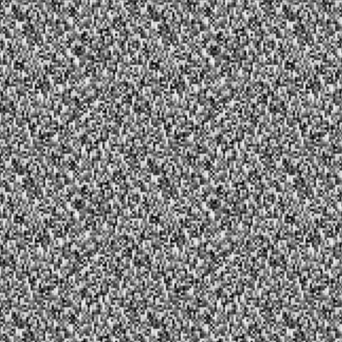

3D Graphics
This project, part of my CS250 Computer Graphics coursework at DigiPen, focused on implementing a Value Noise algorithm in C++ to generate procedural textures. The objective was to support 1D, 2D, and 3D noise generation with adjustable period sizes and interpolation methods, then integrate the results with OpenGL shaders for visualization.
ValueNoise.hpp class to support 1D, 2D, and 3D value noise generation.PeriodDimension enum, dynamically resizing value tables accordingly.SmoothMethod enum.util::random() for consistent and controllable noise output.This project helped me understand the intricacies of procedural noise generation, especially the mathematical foundations behind interpolation and hashing. A key challenge was ensuring consistency and smoothness in higher dimensions while maintaining randomness, which I addressed by carefully implementing permutation hashing and modular indexing. I also gained experience writing flexible, parameterized systems in C++, which can be adapted to different visual or algorithmic needs.